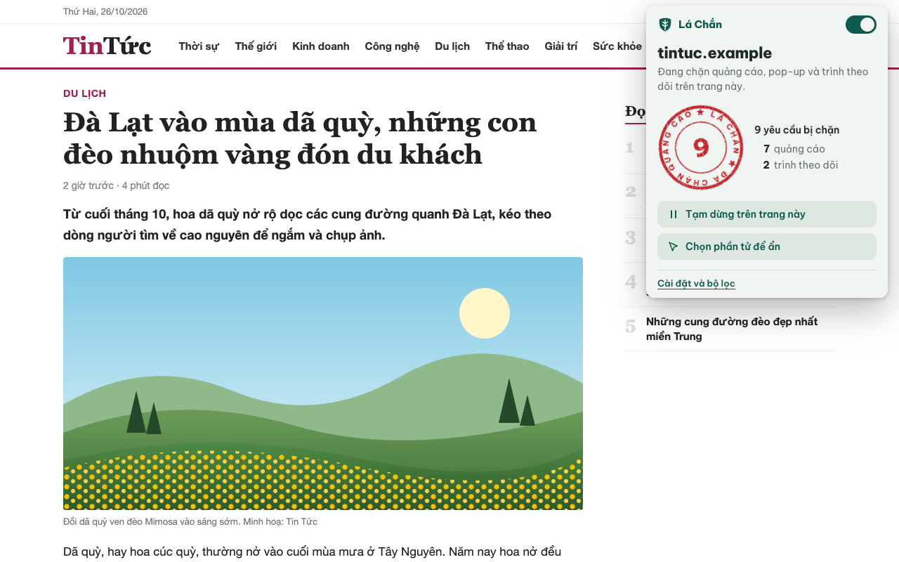
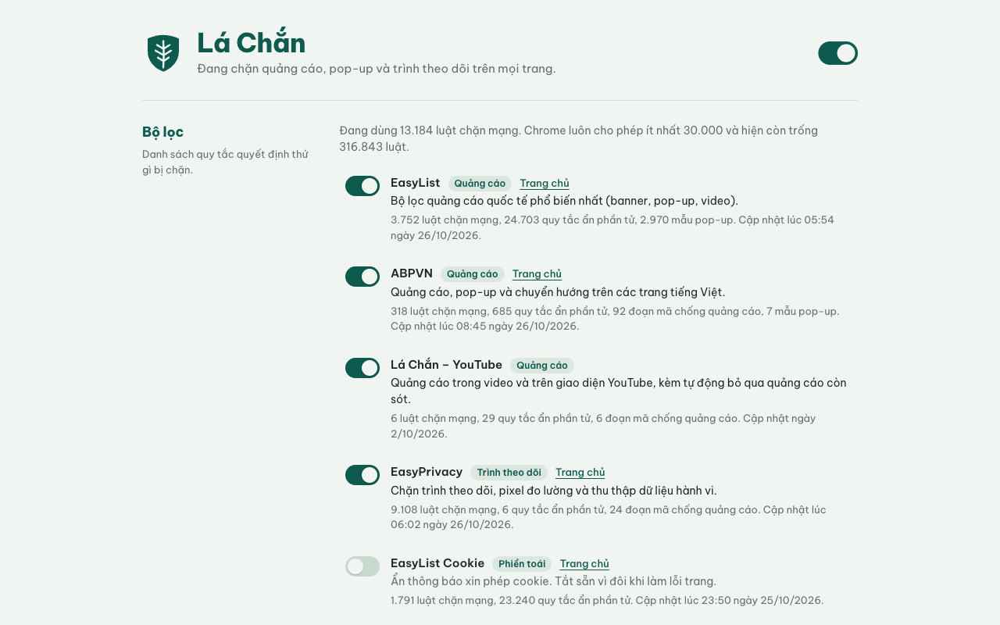
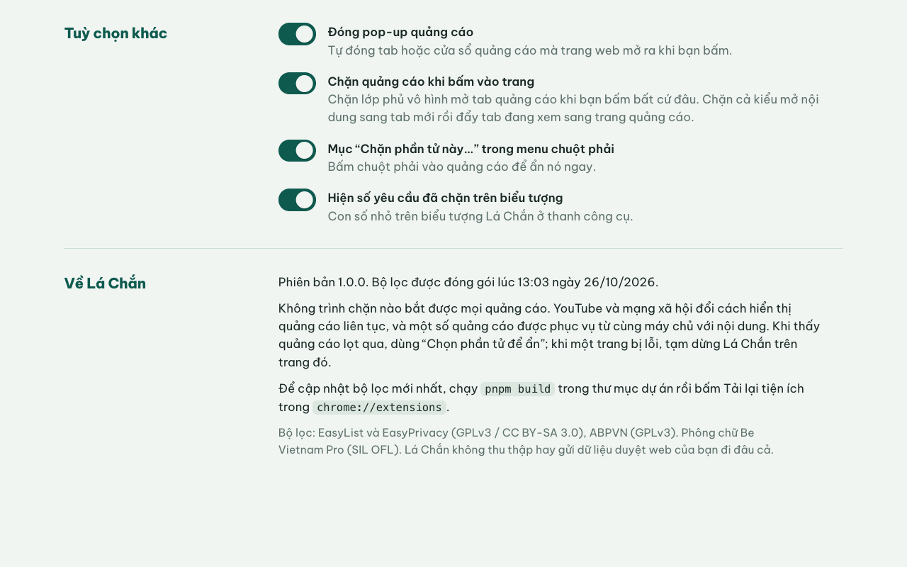

Tính năng
Quảng cáo bị chặn ở nhiều lớp. Lớp nào bỏ sót thì lớp sau bắt tiếp.
Chặn ở tầng mạng
EasyList, EasyPrivacy và ABPVN được biên dịch thành luật declarativeNetRequest. Yêu cầu tới máy chủ quảng cáo bị cắt trước khi kịp tải.
Ẩn khung còn sót
CSS được chèn với độ ưu tiên của người dùng, trang không ghi đè được. Hỗ trợ :has-text(), :upward(), :remove(), :style().
Đóng pop-up, pop-under
Tab mở tới tên miền quảng cáo trong danh sách lọc sẽ tự đóng.
Chống click lừa
Lớp phủ vô hình hay mã bắt mọi cú click không mở được tab quảng cáo, kể cả với tên miền chưa có trong danh sách. Kiểu tab-under cũng bị chặn.
Scriptlet chống quảng cáo
Đoạn mã kiểu uBlock Origin cho những trang hay bật pop-up hoặc đòi tắt trình chặn, phần lớn lấy từ ABPVN.
Chọn phần tử để ẩn
Trỏ vào thứ còn lọt, bấm một cái, xong. Mở từ cửa sổ tiện ích hoặc menu chuột phải.



Cài đặt
Tiện ích chưa lên Chrome Web Store. Bạn cài dạng giải nén theo bốn bước.
- Tải mã nguồn dạng zip rồi giải nén. Giữ nguyên cấu trúc thư mục.
- Mở
chrome://extensionsvà bật Chế độ dành cho nhà phát triển ở góc trên bên phải. - Bấm Tải tiện ích đã giải nén, chọn thư mục
extension/(nơi cómanifest.json). - Bấm biểu tượng mảnh ghép trên thanh công cụ và ghim Lá Chắn.
Cần Chrome 120 trở lên. Edge, Brave, Cốc Cốc và các trình duyệt nhân Chromium khác cài theo cách tương tự.
Sử dụng
Bấm biểu tượng Lá Chắn để xem con dấu đỏ đếm số yêu cầu đã chặn. Từ đây bạn có thể tạm dừng trên trang hiện tại hoặc chọn phần tử để ẩn.
Quảng cáo vẫn lọt
Chọn Chọn phần tử để ẩn, hoặc chuột phải rồi chọn Chặn phần tử này…. Trỏ vào quảng cáo, bấm, sau đó chọn Ẩn vĩnh viễn. Quy tắc mới nằm trong Bộ lọc của tôi.
Trang bị lỗi
Chọn Tạm dừng trên trang này rồi tải lại trang. Muốn bật lại thì bấm lần nữa.
Tuỳ chọn
Chuột phải vào biểu tượng và chọn Tuỳ chọn. Ở đó có danh sách lọc, các trang đang tạm dừng, bộ lọc tự viết, cách xử lý pop-up, menu chuột phải và con số trên biểu tượng.
Bộ lọc tự viết
Lá Chắn hiểu cú pháp Adblock Plus và uBlock Origin. Vài ví dụ thường gặp:
||quangcao.example.vn^ chặn mọi yêu cầu tới tên miền này
example.com##.banner-top ẩn phần tử trên example.com
##.sponsored-box ẩn trên mọi trang
example.com##.tin:has-text(Tài trợ) ẩn khối tin có chữ "Tài trợ"
||trang-quang-cao.vn^$popup tự đóng pop-up mở tới địa chỉ này
@@||example.com/player.js cho phép một địa chỉ bị chặn nhầmBộ lọc regex được đưa sang luật động. Chrome kiểm tra chúng bằng isRegexSupported() lúc chạy, luật nào không hợp lệ sẽ bị bỏ qua.
YouTube
YouTube có danh sách riêng filters-src/youtube.txt và một content script riêng. Các lớp xử lý lần lượt là:
- Xoá
adPlacements,playerAds,adSlotskhỏi phản hồi của trình phát, nên phần lớn quảng cáo không bao giờ được nạp. - Ẩn khung quảng cáo trên giao diện.
- Quảng cáo nào vẫn lọt thì nút Bỏ qua được bấm ngay. Không có nút thì quảng cáo bị tắt tiếng và tua tới cuối.
- Hộp thoại “không cho phép trình chặn quảng cáo” bị gỡ, video phát tiếp.
- Video chính tự dừng sau khi quảng cáo bị bỏ qua thì được phát lại. Lần dừng xảy ra ngay sau một cú click, chạm hay phím bấm được coi là của bạn và giữ nguyên.
YouTube đổi cách phát quảng cáo liên tục, có cả quảng cáo chèn từ máy chủ. Khi họ thay đổi, có thể phải cập nhật filters-src/youtube.txt hoặc extension/content/youtube.js.
Cập nhật bộ lọc
Danh sách lọc được đóng gói sẵn trong tiện ích. Vài tuần nên build lại một lần để lấy bản mới:
pnpm install
pnpm buildLệnh build tải EasyList, EasyPrivacy, ABPVN và EasyList Cookie, có địa chỉ dự phòng trên GitHub. Nó biên dịch, kiểm tra từng luật theo đúng điều kiện của Chrome rồi in thống kê. Xong thì vào chrome://extensions và bấm tải lại thẻ Lá Chắn.
Không có mạng thì chạy pnpm build:offline, lệnh này dùng bản đã tải trong tools/.cache/. Muốn thêm danh sách khác, thêm một mục vào tools/lists.mjs.
Kiểm thử
pnpm test # bộ chuyển đổi bộ lọc, chạy bằng Node
pnpm test:e2e # 74 kiểm tra trong Chromium thật, cần PythonTrước khi chạy test:e2e, cài pip install playwright và playwright install chromium. Bộ kiểm thử dựng một máy chủ cục bộ trả lời cho mọi tên miền. Nhờ vậy việc chặn được kiểm tra thật: yêu cầu bị chặn không bao giờ chạm tới máy chủ.
Các kiểm tra phủ ẩn phần tử, đóng pop-up, lớp phủ quảng cáo, tab-under, tạm dừng theo trang, công cụ chọn, bộ lọc tự viết, scriptlet trên trang Việt và YouTube. Ảnh chụp giao diện được lưu vào tests/e2e/out/.
Chrome bản thường từ 137 trở đi bỏ qua cờ --load-extension. Hãy đặt CHROME_PATH trỏ tới Chromium hoặc Chrome for Testing.
Cách hoạt động
| Thành phần | Vai trò |
|---|---|
extension/rules/*.json | Bộ luật tĩnh, mỗi danh sách một bộ. Bộ lọc chỉ có tên miền (||ads.com^) được gộp thành một luật requestDomains. |
extension/background.js | Service worker. Bật tắt bộ luật, quản lý luật động, chèn CSS, đóng pop-up, menu chuột phải và biểu tượng. |
content/cosmetic.js | Chạy ở mọi khung trang. Xin CSS cho tên miền, gom class và id để áp bộ lọc ẩn chung, chạy bộ lọc nâng cao. |
scriptlets/*.js | Chạy trong ngữ cảnh trang, chỉ đăng ký cho tên miền có trong danh sách. |
content/click-guard.js | Chặn tab quảng cáo mở từ lớp phủ vô hình hoặc từ mã bắt click, và chặn tab-under. |
content/youtube.js | Bỏ qua quảng cáo YouTube còn lọt và phát tiếp video bị dừng. |
content/picker.js | Công cụ chọn phần tử. |
extension/lib/ | Bộ chuyển đổi cú pháp bộ lọc, dùng chung cho lệnh build và bộ lọc tự viết. |
tools/ | Lệnh build bộ lọc, mã nguồn scriptlet, kiểm thử đơn vị. |
Vài quyết định thiết kế
- Chỉ một luật tĩnh sai là Chrome từ chối nạp cả tiện ích. Vì thế lệnh build kiểm từng luật, kiểm selector bằng trình phân tích CSS và chuyển regex sang luật động.
- EasyList có khoảng 13.000 bộ lọc ẩn chung chỉ gồm một class hoặc id. Chèn hết vào mọi trang thì quá nặng.
cosmetic.jsgom những class và id thực sự có trên trang theo từng đợt nhỏ, service worker chỉ chèn phần khớp. - Ngoại lệ
@@được đánh số luật nhỏ hơn luật chặn. Cửa sổ tiện ích nhờ đó đếm đúng số yêu cầu bị chặn.
Giới hạn
- Không trình chặn nào bắt được mọi quảng cáo. Gặp cái lọt thì công cụ chọn phần tử là cách nhanh nhất.
- Bài tài trợ trên Facebook và TikTok nằm lẫn trong luồng nội dung, mã lại bị làm rối. Các danh sách đi kèm gần như bó tay.
- Manifest V3 giới hạn regex ở 2 KB khi biên dịch và không hỗ trợ
$csp,$removeparam. Scriptlettrusted-*và vài tài nguyên chuyển hướng của uBlock Origin cũng không có. Lệnh build in rõ bộ lọc nào bị bỏ và vì sao. - Bộ lọc chỉ mới khi bạn build lại.
- Chrome tự tạo thư mục
extension/_metadata/khi tải dạng giải nén. Đó là dữ liệu tạm, xoá được.
Giấy phép
- EasyList, EasyPrivacy, EasyList Cookie theo GPLv3 hoặc CC BY-SA 3.0 (easylist.to).
- ABPVN theo GPLv3 (abpvn.com).
- Phông Be Vietnam Pro theo SIL Open Font License.
Dữ liệu trong extension/rules, extension/filters và extension/scriptlets sinh ra từ các danh sách trên và giữ nguyên giấy phép gốc. Mã nguồn của Lá Chắn phát hành theo giấy phép MIT.